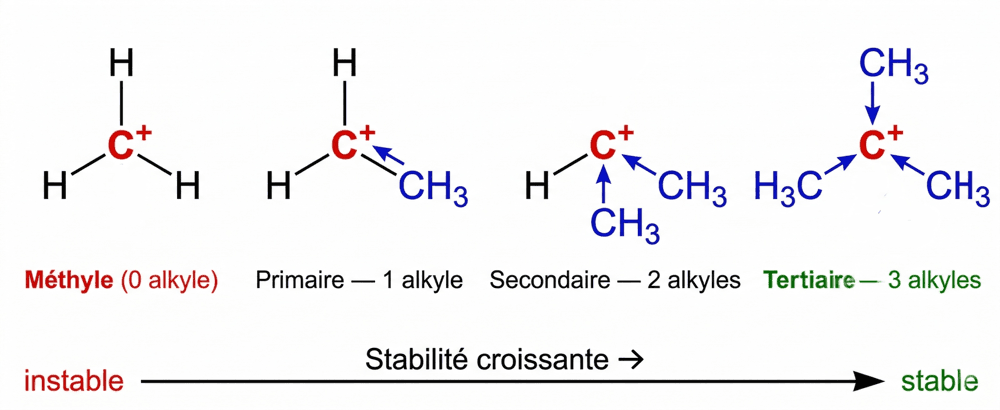

Markovnikov et la stabilité des carbocations
Toute addition passe par un carbocation.
Et c'est le plus stable qui décide du produit.
La liaison π a deux caractéristiques qui font toute la réactivité des alcènes : elle est faible (≈ 260 kJ/mol contre ≈ 350 kJ/mol pour une σ) et elle est riche en électrons. C'est un aimant à espèces en manque d'électrons. L'alcène est donc un nucléophile (il offre ses électrons π) et il réagit avec des électrophiles (H⁺, Br₂…). On casse 1 liaison π faible pour créer 2 liaisons σ fortes : le bilan est très favorable. Et comme la casse de la π libère un « bras libre » sur chaque carbone, on ajoute toujours 2 atomes : H + OH, H + Br, Br + Br, ou H + H.
- 1 La liaison π attrape H⁺ — étape lente. Le nuage π, riche en électrons, capte le proton du milieu acide. La π se casse : H se fixe sur un carbone, l'autre se retrouve avec une case vide → c'est un carbocation (C⁺). C'est l'étape la plus lente, donc celle qui contrôle la vitesse de toute la réaction.
- 2 L'eau attaque le carbocation — rapide. Le C⁺ cherche désespérément des électrons. L'eau, qui a des doublets non-liants, les lui donne → une liaison C−O se forme. On obtient un ion oxonium (l'oxygène porte temporairement une charge +).
- 3 Déprotonation — rapide. L'ion oxonium rend un H⁺ au milieu, l'oxygène redevient neutre, et on obtient l'alcool final : le propan-2-ol.

Étape 1 — la π attrape H⁺ → carbocation secondaire.

Étape 2 — H₂O donne un doublet au C⁺ → ion oxonium.

Étape 3 — l'oxonium perd H⁺ → le propan-2-ol, produit final.
- 1 On compte les voisins carbones. Primaire (1°) : le C⁺ est lié à 1 seul autre carbone. Secondaire (2°) : à 2. Tertiaire (3°) : à 3. Et le méthyle CH₃⁺ n'en a aucun.
- 2 L'échelle de stabilité. 3° > 2° > 1° > méthyle. Chaque groupe alkyle voisin cède un peu de densité électronique au C⁺ par effet inductif donneur (+I) : plus il y a de voisins, mieux la charge + est diluée, plus le carbocation est stable. Le méthyle, lui, est si instable qu'il ne se forme quasi jamais.
- 3 Markovnikov en découle. Propène + HBr : si le carbocation se formait sur le bout de chaîne, il n'aurait qu'1 voisin → primaire, instable. S'il se forme sur le carbone central, il a 2 voisins → secondaire, stable. La réaction choisit toujours le carbocation le plus stable → Br⁻ se fixe au milieu → 2-bromopropane. Autrement dit : H va sur le carbone le moins entouré, X va sur le plus entouré. Mnémo : « les riches s'enrichissent ».

Plus il y a d'alkyles autour du C⁺, mieux la charge + est diluée — et plus le carbocation est stable.